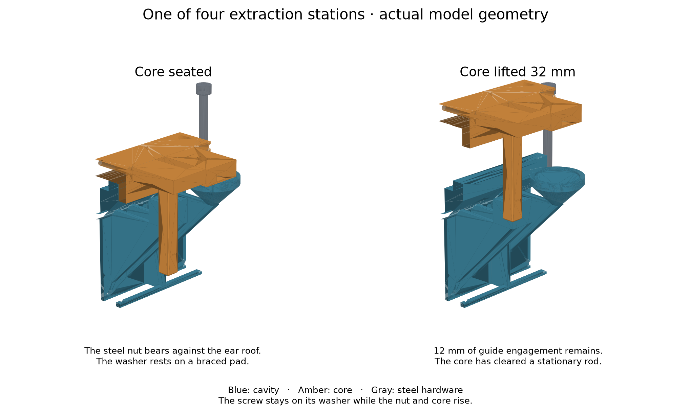

The part12
Lift it 32 mm
Quarter turn, opposite-side pair, quarter turn, the other pair. Round and round. It is forty full turns on every screw and it is meant to feel long — you are separating a cured rubber part from a coated face without shocking either.

| What you turn | What moves |
|---|---|
| One quarter turn, one screw | 0.20 mm |
| One round of all four | 0.20 mm of core |
| Forty full turns each | 32 mm — the working lift |
- Advance in opposite-side pairs, a quarter turn each, then the other pair. Equal turns keep it level; they do not equalise force.
- Watch the gap at all four corners as you go, and watch the rod.
- Stop immediately if an ear flexes, a guide binds, or one side is running ahead. Find out why before you turn anything else.
- Stop at the travel marks. Four shallow marks on the outside of the blades come level with the bearing mouths at exactly 32 mm. They are witnesses, not stops — nothing prevents you going past them.